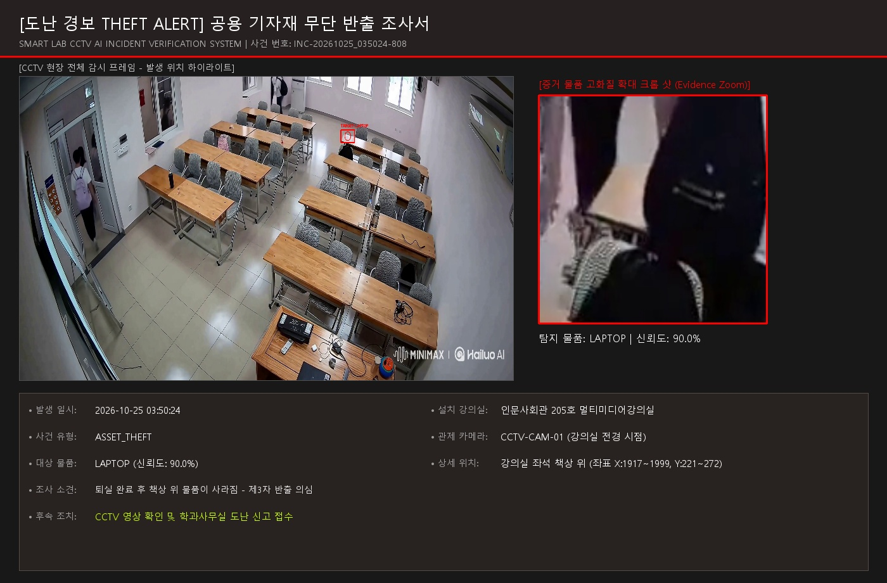

1. 사건 및 발생 장소 개요
| 설치 강의실 | 인문사회관 205호 멀티미디어강의실 | 관제 카메라 | CCTV-CAM-01 (강의실 전경 시점) |
|---|---|---|---|
| 발생 일시 | 2026-10-25 03:50:24 | 상세 위치 | 강의실 좌석 책상 위 (좌표 X:1917~1999, Y:221~272) |
| 탐지 물품 | LAPTOP (인공지능 신뢰도: 90.0%) | 바운딩 좌표 | X: 1917~1999, Y: 221~272 |
2. CCTV 영상 기반 시각적 증거물 (Evidence Media)
전체 현장 검증 스냅샷 (발생 위치 하이라이트)

증거 물품 확대 크롭 (Zoom-In)
3. 조사 소견 및 행정 조치 내역
| 조사 소견 | 퇴실 완료 후 책상 위 물품이 사라짐 - 제3자 반출 의심 |
|---|---|
| 후속 행정 조치 | CCTV 영상 확인 및 학과사무실 도난 신고 접수 |